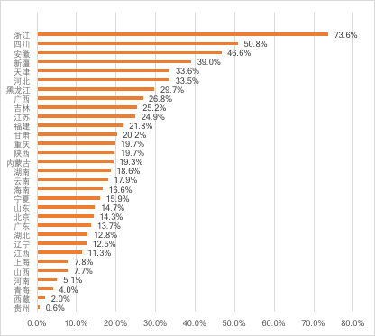

《2017年省级公务员招考中的性别歧视调查报告》
报告摘要
“国家机关作为法律规范的制定者和执行者，在招考公务员时应该带头禁止歧视性行为，落实法律法规和国际公约的规定，保障公民平等就业的权利，为企事业单位的招聘树立良好的榜样，成为展示中国人权进步的重要窗口。”中国政法大学宪政研究所相继发布了2010年和2011年《国家公务员招考中的就业歧视调查报告》，2011年发布的《报告》对中央国家机关和6个特定部门的8类就业歧视情况进行了研究。
近年来，我国公务员招考在保障公平方面，出现了一些积极的变化，教育部规定了高校在预防和消除校招歧视中的责任、人社部要求进一步规范事业单位公开招聘工作。但是公务员招考中的歧视现象依然广泛存在，从中央到地方，就业歧视的严重程度呈现递增的趋势，性别歧视尤其是针对女性的歧视越来越严重。
本次调查发现31个省（市）的公务员招考职位表均存在性别歧视，各省（市）之间的情况差别大，浙江省招考性别歧视的情况最为严重。本次拟招考的岗位中1/4存在明显的性别歧视，其中歧视女性的岗位数是男性的5倍。
针对目前公务员招考中普遍存在的性别歧视现象，我们建议树立平等观念、消除理解误区；着力制度建设，保障性别平等。消除就业性别歧视不仅是政府的责任和义务，我们每一个公民在日常生活中都可以进行实践。
一、调查范围和目的
本次调查选取了4个直辖市、5个自治区，22个省的公务员招考职位进行分析，旨在了解这31个省级行政单位公务员招考中性别歧视的现状，对以后公务员招考中如何避免性别歧视提出建议，最后从普通公民的角度来探讨我们可以为消除就业性别歧视，维护自身的权益做些什么。
在调查方法上，我们选取了31个省（市）发布的公务员招考职位表，对岗位要求是否存在性别限制的情况进行甄别，对各省（市）的情况分别进行分析。
采用这种方法进行公务员招考中的性别歧视研究，仅能发现笔试环节之前，而且是用人单位愿意暴露的显性性别歧视，对面试、资格审查等环节的隐性性别歧视，我们无法通过分析职位表看出这些岗位是否存在性别歧视。但是，我们希望通过对各省（市）公务员招考中性别歧视现状的研究，促使各省（市）相关单位自觉整改，引发社会公众的关注和行动。
二、歧视标准和认定
1958年国际劳工组织通过的《关于就业和职业歧视公约》的规定中首先提出，“就业中的性别歧视”就是基于性别的任何区别、排斥或特惠，“其后果是取消或损害就业方面的机会平等或待遇平等”。
在《消除一切针对妇女歧视公约》里，“对妇女的歧视”一词指基于性别而作的任何区别、排斥或限制，其影响或其目的均足以妨碍或否认妇女不论已婚未婚在男女平等的基础上认识、享有或行使在政治、经济、社会、文化、公民或任何其他方面的人权和基本自由。
在我国法律中，《就业促进法》、《妇女权益保障法》均明确提出：“用人单位不得以性别为由拒绝录用妇女，或者提高对妇女的录用标准”。
基于此在公务员招考职位表中要求“男性”、“男性优先”、“适合男性”或者“建议男性报考”等在性别方面做出了明显倾向性表述，提出了与工作本身无关的要求，因此认定为性别歧视。同理，要求“女性”、“女性优先”等也属于性别歧视。
三、省级公务员招考中的性别歧视现状
（一）31个省（市）公务员招考均存在性别歧视，各省（市）情况差别大
本次研究对31个省级行政区计划招考的67063个公务员岗位进行了分析。统计结果显示本次研究的31个省（市）公务员招考中均存在性别歧视。
浙江性别歧视岗位的比例为91%，贵州性别歧视岗位的比例最低为0.8%。
歧视女性最严重的省（市）前三名分别是：浙江73.6%，四川50.8%，安徽46.6%。
歧视男性最严重的省（市）前三名分别是：浙江17.4，河北15.3%，吉林12.2%。
附表 各省（市）性别歧视岗位占比情况 （二）1/4的岗位存在性别歧视，女性遭遇的性别歧视比男性更为严重
（二）1/4的岗位存在性别歧视，女性遭遇的性别歧视比男性更为严重
统计发现2017年省级公务员招考中约1/4的岗位存在明显的性别歧视，其中21%的岗位要求“男性”，4%的岗位要求“女性”，女性遭遇的性别歧视是男性5倍以上。
用歧视女性岗位数占比减去歧视男性岗位数占比，得出净歧视女性岗位数占比，最严重的省（市）前三名分别是：浙江（56.2%），四川（50.8%），安徽（38.4%）。
基于公务员招考存在同一岗位存在设置男、女两个岗位代码分别进行招考的现状，净歧视女性岗位数占比更能反映公务员招聘性别歧视的现状，在这种情况下大约17.5%的岗位存在性别歧视。
附图 各省（市）“净歧视女性”岗位数占比情况

四、改革建议和制度措施
2011年的《报告》显示“对比去年的统计结果，今年性别歧视的现象略有增加，歧视岗位数量由去年的1203个增加至今年的1519个，占总体岗位数量的比例由去年的12.96%增加至今年的15.6%。”在整个社会保障公平就业方面不断取得进步的形势下，消除公务员招考性别歧视不进反退。公务员招考中的性别歧视不仅损害了求职者，特别是女性求职者的权益，还对社会上其它用人单位的招聘行为产生了恶劣的影响。在下级机关向上级机关靠齐，企业向政府靠齐的心态下，只有严格的整顿公务员系统内部的性别歧视问题，才能维护政府的正面形象，向企业和社会传递良好的社会价值。
（一）树立平等观念，消除理解误区
消除公务员招考的性别歧视，首先就是要克服观念上的误区。在设置岗位要求时，招考机关缺乏性别平等的意识，人为的设置了大量不合理的性别条件限制。在我们以往针对一些性别歧视的岗位进行举报的过程中，招考单位常见的答复如下：
回答1：考虑工作性质（经常出差、加班等）设置性别限制，是“关爱女性”不是性别歧视。
回答2：以单位现有人员性别比例失衡需改变结构为由设置性别限制，“男女搭配干活不累”不是性别歧视。
回答3：部分岗位按照男女1:1设置招录岗位，“数量上一样”不属于性别歧视。
回答4：在性别方面做出了明确的倾向性表述，例如：建议男性报考等，“没有明确拒绝女性报考”不属于性别歧视。
针对回答1，我们认为这些看似保护关爱女性的措施，实际上限制了女性自由择业的权利，减少了女性的就业机会，加剧了女性在公务员招考中的竞争激烈程度，构成了对女性的就业歧视。
针对回答2，我们认为单位人员的性别结构与工作本身并无直接关系，在竞争充分的情况下，公务员队伍整体的性别比例应当趋于平衡。需要改变的是招录的过程，而不是人为的限制招录结果。
针对回答3，我们认为岗位男女1:1设置在某些情况下剥夺了更有能力的求职者的选择机会，构成了对其的歧视。公务员招录考试是科学选拔人才的考试，应当更加公平严谨，不应设置不必要的限制。
针对回答4，我们认为这种歧视方式的危害并不因此降低，女性报考人员同样会因为这些建议而“望而却步”，同样达到了排斥性的效果。
当前我国一些招考机关在设置岗位条件限制时，漠视相关法律法规，主观性过强，严重侵犯了求职者的就业权。在制定岗位具体要求时，招考机关应尽量详细介绍岗位性质和职能，将选择权还给求职者。
（二）着力制度建设，保障性别平等
消除就业性别歧视是政府的责任和义务，促进性别平等是我国宪法和法律的要求。用人单位应当自我审查，提高对自身的要求。公务员局应当加强审核，严格进行把关。行政机关、司法机关和妇联等机构应当加强对就业性别歧视的救济。
1.用人单位自我审查
用人单位应当加强自我审查，在设置性别条件时，应以不设置为原则，设置为例外。如果该岗位符合《女职工劳动禁忌》的规定，或者有其它合理合法的要求需要设置性别限制，应当详细说明理由，避免误导公众。
2.公务员局加强审核
各省的公务员局不仅负责招考计划的搜集、汇总还承担对招考信息进行审核的职责。因此，公务员局应当发布规范性文件，对各用人单位制定岗位要求的规范性进行指导，避免用人单位出现明显的违法性错误。其次，公务员招考机关可以要求用人单位根据规范性文件对违法的招录条件进行修改，如果用人单位拒不修改，公务员局有权撤销该岗位。最后，在公务员招考公告发布后，设置公示期，公示期内允许社会各界人士对招录公告中的岗位性别条件设置进行质疑。对于被质疑的限制条件，公务员局应当及时审查和处理。
3.建立完善的救济制度
用人单位的上级机关、司法机关、妇联等相关机关和社会团体在就业性别歧视救济中均能起到特定的作用，但是也容易出现相互推诿的情况。我们倡导多元的救济途径，方便求职者根据自身情况作出选择，但是应当确保每一条救济渠道运行顺畅。当求职者就性别歧视问题向以上任一单位进行投诉或举报后，应在办理时限内积极解决，如确实认为其它单位更适合受理，应当由该单位进行移交。
五、让我们行动一起努力改变
我国2018年政府工作报告提出要健全劳动关系协商机制，消除性别和身份歧视，使更加公平、更加充分的就业成为我国发展的突出亮点。春节后，北京市人社局发文要求办会机构在招聘会现场设立就业歧视投诉窗口。“在今年两会上，就近期有关公务员招录设置性别要求的问题，全国政协委员、全国妇联原副主席、书记处书记赵东花提交了一份《关于加强对地方公务员招录工作中存在的性别歧视问题监督检查的提案》，呼吁相关政府部门、事业单位，认真贯彻落实男女平等基本国策，依法办事，不在招录公告上设置性别要求。”
消除就业性别歧视是政府的责任和义务，中央机关和各级地方机关应当坚定信念，改变目前公务员招录中性别歧视的现状，勇于打破现有的利益格局，实现公务员招录考试中的零歧视，为社会各界作出表率。
与此同时，消除就业性别歧视，乃至就业歧视是我们每一个公民义不容辞的责任。在性别歧视的讨论中发出质疑的声音、向劳动监察大队或者相关机构举报性别歧视的招聘信息，诉诸媒体寻求曝光，向法院进行起诉等都是有效的参与方式。
我们呼吁公务员招考率先进行变革，从消除招考公告中的显性性别歧视开始，落实宪法和法律规定的公民性别平等就业权。社会公众需要自我觉醒，勇于通过合法途径维护自身权利。
温馨提示
感谢您的耐心阅读，由于时间仓促本报告尚有很多不完善之处，欢迎讨论。另外，2018年度报告已经着手准备，预计将增加对不同系统公务员招录性别歧视的分析，以及对特定岗位公务员招录性别限制是否合理、合法的讨论，如有兴趣参与2018年度报告的资料搜集或撰写工作请与我们联系。交流邮箱：xcjyxbqs@126.com。
鸣谢
感谢马户和小安对本报告的贡献，感谢大家对本报告的关心，在此一并致谢。